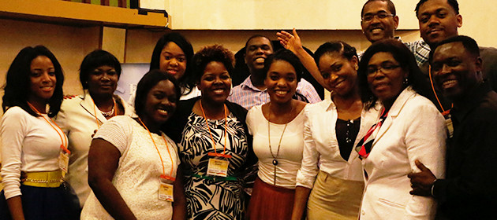

Planning
Committee:
- Emma Soy
- Ania Antoine
- Robert Charles
- Magalie Oscar
- Marie Rose Michel
- Marie Telemaque
- Annie Robert
- Lodze Noel
- Jasmine Armand
- Jody Lilite
- Pejanie Clermont
- Nancy Dumont
Worship
Team:
- Mecene Soy
- Andrew Soy
- Tyler Soy
- Steven Bertrand
- Stanley Bertrand
- Dinah Rene
- Sarah Mitial
- Sindy Mondesir
Planning Committee
Each year the planning committee, takes a weekend away from everything to plan for the retreat.
we prayed and discussed the last year retreat and lesson learned. In order to improve your experience and create a positive atmosphere with the worship and the messages and all the planned activities.
This year's planning committee was well represented with different age group covering many generations.
We are always looking for help before and during the conference, if you are interested to serve or if you have any questions regarding the retreat, please feel free to contact any member of the planning committee.
Worship Team

The Women Seeking the Father worship is composed of many talented musicians from many Haitian churches in the Chicagoland area. Our members are experienced worship leaders vocalists and musicians who devoted their lives and talent to serve God in the ministry.
The goal of the worship team for every retreat is to create a atmosphere of worship, an inviting environment and a place that is free and away from the noise of life. to help the retreat attendees an avenue to surrender themselves in the presence of God for two days.
Rehearsal for the retreat begins in the month of May thru September, so all the members are very busy preparing, planning for the 2015 retreat.
We are always looking for help before and during the conference, if you are interested to serve or if you have any questions regarding the retreat, please feel free to contact any member of the planning committee.
Thanks for exploring Women Seeking the Father Ministry. We hope to see more of you in our next conference!